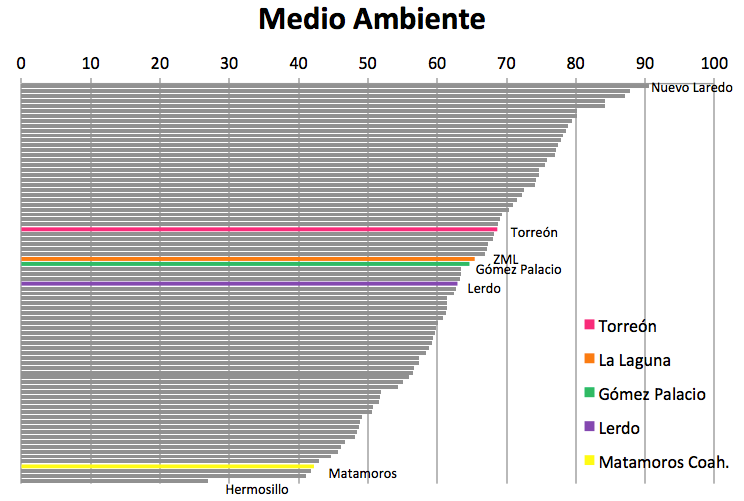
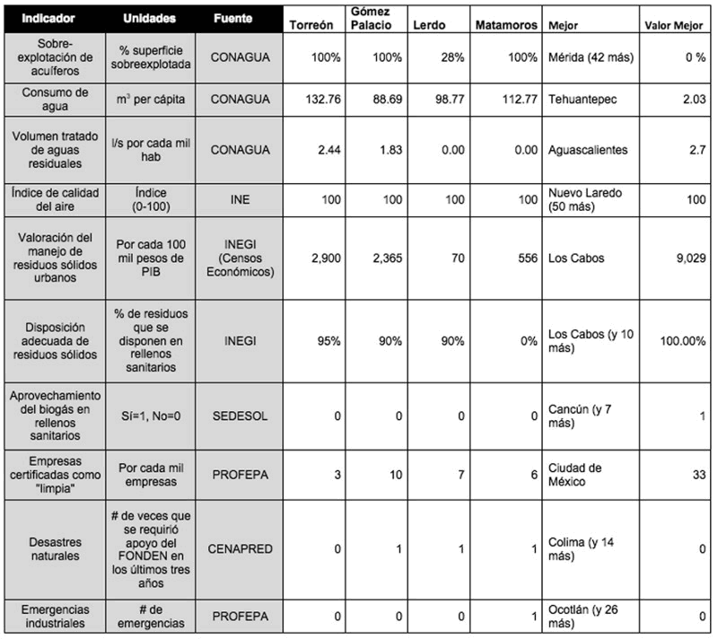

De acuerdo al ICU 2012, en cuanto a medio ambiente La Laguna ocupa el lugar 35 de 77, con Gómez Palacio a un nivel equivalente al metropolitano y con Torreón con indicadores un poco mejores. Lerdo presenta valoraciones un poco inferiores a las de la ZML, mientras Matamoros de forma aislada ocuparía el antepenúltimo puesto con niveles similares al Valle de México.
El primer indicador de este subíndice se refiere a la sobre explotación del acuífero, donde solamente Lerdo no presenta una sobreexplotación del 100% según CONAGUA. En cuanto a consumo de agua por persona la ZML presenta mayor consumo que la media de ciudades, sin embargo Gómez Palacio y Lerdo presentan un consumo inferior. Nuestra ciudad (zona metropolitana) se encuentra entre las 15 con mayor proporción de aguas residuales tratadas, sin embargo Lerdo y Matamoros no presentaban tratamiento de aguas en el año de estudio.
El Índice de calidad del aire, retomado del Instituto Nacional de Ecología, muestra a los municipios de la ZML dentro de las ciudades que obtienen la máxima valoración. La valoración del manejo de residuos sólidos urbanos, pondera el peso de la economía ligada el reciclaje sobre el total de la economía, indicador en el cual Gómez Palacio y Torreón presenta niveles de economía de reciclaje superiores a la media, sin embargo Matamoros y especialmente Lerdo muestran este sector incipiente. En cuanto al porcentaje de disposición de residuos en rellenos sanitarios , la ZML tiene aún mucho que mejorar ya que a pesar de que Gómez Palacio y Lerdo cuentan con 90 % y Torreón 95 %, la meta realizable que tienen diez ciudades como Zacatecas o Nuevo Laredo es del 100 %, y Matamoros no registra ningún tipo de disposición. Relacionado también con el manejo de residuos es el indicador de aprovechamiento del biogás en rellenos sanitarios, que en el caso de la ZML ninguno de los municipios cuentan con algún tipo de aprovechamiento registrado.
En el rubro de empresas certificadas como limpias por cada mil empresas, la ZML en lo general se encuentra por debajo de la media, sin embargo el peor indicador lo lleva el municipio de Torreón quien registra solo 3 de cada mil empresas certificadas. En cuanto a desastres naturales y emergencias industriales, no es un foco rojo en la región y especialmente en Torreón donde no se han registrado ni desastres ni emergencias industriales.